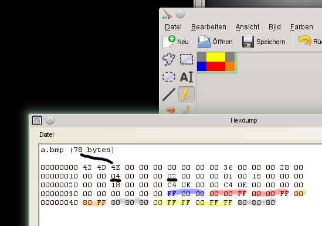

Auf der Suche nach einem Binärformat, das ich leicht analysieren und verstehen kann, bin ich bei dem Bitmap-Bildformat von Windows gelandet. Wie ist ein solches Bild eigentlich aufgebaut? Ich wollte es genauer wissen und habe mir das Format daher im Detail angeschaut.
Fangen wir mit einem Testbild aus 3x2 Pixeln an. Zum Nachmachen, könnt ihr es z.B. mit Paint recht einfach nachmalen und mit einem Hexeditor anschauen. Unter Linux reichen der Midnight Commander oder hexdump für solche Zwecke, unter Windows gibt es das Programm HxD. Es ist auch eine schöne Übung, dafür ein eigenes Programm in der präferierten Programmiersprache einfach selbst zu schreiben.
Wir betrachten das obige Bild nun Byte für Byte in der Ausgabe des Hexeditors und fokussieren uns zunächst auf die fett markierten Zahlen.
42 4d 4e 00 00 00 00 00 00 00 36 00 00 00 28 00 00 00 03 00 00 00 02 00 00 00 01 00 18 00 00 00 00 00 18 00 00 00 c4 0e 00 00 c4 0e 00 00 00 00 00 00 00 00 00 00 24 1c ed ff ff ff 00 00 00 00 00 00 ff ff ff 7f 7f 7f ff ff ff 00 00 00
Die ersten beiden Bytes mit dem Inhalt 0x42 und 0x4d stehen für die Buchstaben B und M als ASCII-Wert - also Bitmap. Durch das voran gestellte "0x" wird jeweils kenntlich gemacht, das der Hexwert 42 gemeint ist und nicht die dezimale Zahl 42. Danach folgt ein Byte (0x4e), welches die Größe (hier dezimal 78) in Bytes angibt. Bei dem zehnten Byte, also an Stelle 0x0a, steht eine 0x36, die den Offset bis zum Beginn der eigentlichen Bilddaten angibt. Die Zahlen sind jeweils fett markiert.
Ab diesem Byte 0x36 folgen die Bilddaten. Hierbei sind pro Pixel drei Byte abgelegt - für jede Farbe Rot, Grün und Blau ein Byte. Die Daten sind im Little-Endian-Format abgelegt, was bedeutet, dass erst die niederwertigen Bytes kommen und anschließend die höherwertigen Bytes folgen - also quasi genau "falsch herum". Daher werden auch die Werte nicht als RGB-, sondern als BGR-Werte gespeichert.
Auf dem folgenden Bild sind die Zusammenhänge noch einmal für ein anderes Bild zusammengefasst. Ich habe diesmal ein Bild mit einer Auflösung von 4x2 Pixeln gewählt, da die Bildzeilen im Bitmap-Format immer mit Nullen aufgefüllt werden, bis sie ein Vielfaches von 4 ergeben. Dadurch sind bei dieser Auflösung keine "sinnlosen" Informationen mehr im Bild enthalten.

In dem Hexdump sind die Stellen, die Farbinformationen enthalten, in der entsprechenden Farbe hervorgehoben. Man kann gut erkennen, wie die Zeilen von unten nach oben und von links nach rechts aufgebaut werden.
Im dritten Byte finden wir wieder die Bildgröße - in diesem Fall den Wert 0x4E, was wieder einer dezimalen 78 entspricht. Die Auflösung finden wir in den unterstrichenen Bytes an den Stellen 0x12 (der Wert 0x4) und 0x16 (der Wert 0x2).
Es wäre nun ein Leichtes, die Bildinformationen einzelner Pixel zu ändern oder geheime Botschaften in der Bilddatei zu verstecken - wie in einem Steganogramm. Das Team von Hak5 hat einen solchen Hack schon einmal vorgestellt.
Update: Ausführlicher Artikel über das JPEG-Bildformat: Understanding and Decoding a JPEG Image using Python.